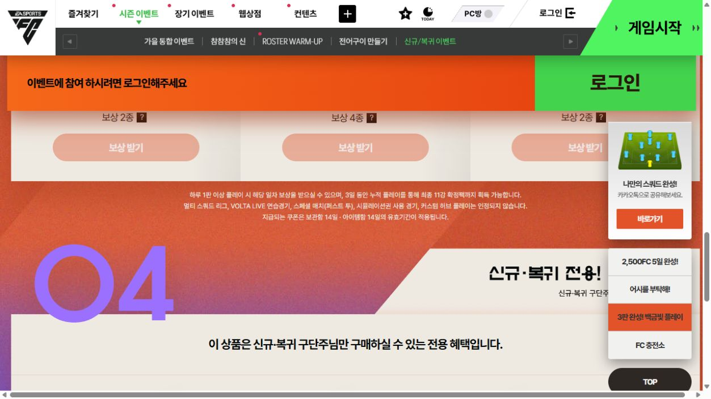
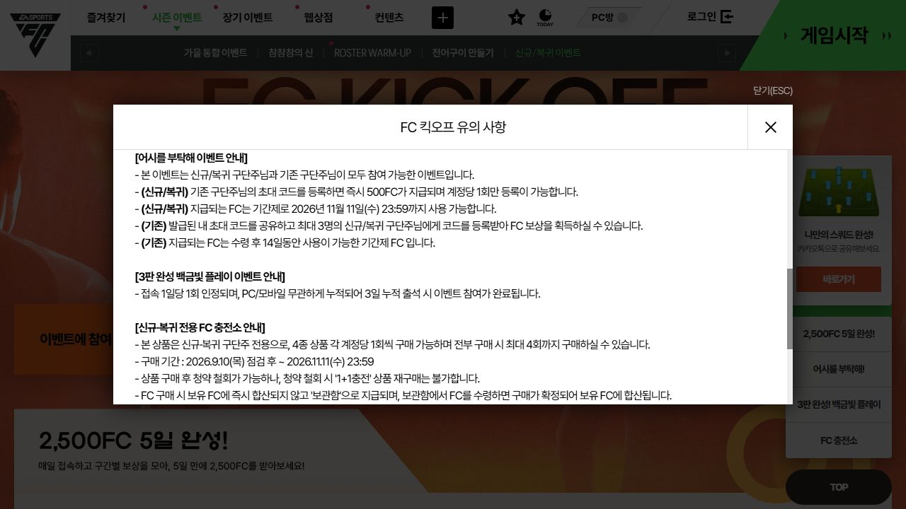

B · 라이브서비스 PM
FC 온라인 — 이벤트 보상을 실제 경기 참여로 연결하려면?
FC KICK-OFF 신규·복귀 이벤트의 접속·보상 수령·경기 참여를 구분했습니다. 실제 규칙을 확인한 뒤 첫 경기 준비 안내를 시험하는 모의 개선안입니다.

- 확인한 구조
- 접속 5일 보상 총 2,500FC와 경기 관련 미션은 별도로 존재합니다.
- 원문 대조
- 본문과 유의사항에 3일 미션 조건의 설명 차이가 있습니다. 서버 규칙 오류를 입증한 것은 아닙니다.
- 검증할 제안
- 올바른 규칙을 공통 안내한 뒤, 첫 보상 수령·경기 미완료 계정에 준비 안내를 시험합니다.
보상 수령을 경기 참여 성과로 보지 않습니다. 첫 경기 완료 전환율을 기준으로 안내의 효과를 검증합니다.
문제 정의
보상 수령을 경기 참여 성과로 취급하면 운영 개선의 목표가 흐려진다. 접속·수령·경기 완료·다음 주 재참여를 나눠 어느 행동을 바꿀지 정했다.
핵심 근거
공식 규칙과 분석 가설을 분리한 핵심 표
| 경로 | 공식 조건·보상 | 운영 판단 |
|---|---|---|
| 첫 참여 | 기본 참여 2026.09.10~10.28 / 조건 충족 시 11.11까지 연장 | 신규·복귀 자격과 연장 조건을 먼저 확인 |
| 접속 | PC·모바일 5일 접속 / 총 2,500FC | 수령만으로 경기 완료라고 보지 않음 |
| 경기 미션 | 본문은 서로 다른 3일 각 1판 이상 / 유의사항은 출석 설명 | 실제 인정 규칙 확인 후 안내를 통일 |
| 개선안 | 첫 보상 수령·아직 인정 경기 미완료 계정에 준비 안내 | 추가 보상 없이 안내 유무 비교. 효과는 미측정 |
기간·수량·조건: 공식 B1·B2, 2026.10.24 확인. 마지막 행은 미실행 제안이다. 전환율·유저 수를 가정하지 않았다.
기존 공식 조건·사건·VOC 상세 근거 펼치기
선정한 이벤트와 공식 조건
접속·경기·초대·전용 상품이 한 이벤트 안에 구분돼 있어, 보상 관심과 경기 행동을 비교하기에 적합하다. 접속과 선수단 구성을 지원해 경기 재참여를 돕는 목적이 있을 것이라는 해석은 분석 가설이며 운영사의 내부 목표가 아니다.
| 항목 | 공식 웹에서 확인한 조건 | 분석에서의 사용 |
|---|---|---|
| 기본 참여 기간 | 2026.09.10 점검 후~10.28 23:59 | 이 시기 규칙을 기준으로 분석 |
| 연장 조건 | 기간 내 보상받기 1회 이상 또는 전용 상품 구매 이력이 있으면 11.11까지 참여 | 모든 신규 방문자가 11.11까지 진입 가능한 것으로 쓰지 않음 |
| 신규 | 09.10 00:00 이후 첫 생성 구단주. 2018.05.03~05.13 선점 후 한 번도 접속하지 않은 예외 포함 | 신규와 복귀를 분리 |
| 복귀 | 08.11 00:00 이후 PC·모바일 미접속, 이전 07.30~09.09 이벤트 보상·상품 구매 이력 없음 | 단순 장기 미접속 전체와 구분 |
| 접속 경로 | PC·모바일 누적 5일 접속 | 접속만으로 충족 가능한 경로 |
| 경기 경로 | 본문상 하루 1판 이상, 서로 다른 3일 누적 플레이 | 유의사항의 출석 설명과 불일치. 서버 규칙 확정 필요 |
| 제외 모드 | 멀티 스쿼드 리그, VOLTA LIVE 연습경기, 퍼스트 투, 시뮬레이션권 경기, 커스텀 허브 | ‘어떤 경기든 인정’으로 안내하지 않음 |
| 당일 반영 | 모바일은 23:40 이내 접속·플레이 완료 권고. 점검 중 참여 불가 | 일자 경계·지연 문의 대응에 반영 |
출처: B1 본문과 유의사항. 2026.10.24 비로그인 화면에서 재확인했다. 실제 로그인 자격 판정·경기 로그·지급 결과는 접근하지 않았다.
원문에서 확인한 안내 차이
본문의 ‘하루 1판 이상 플레이’와 유의사항의 ‘3일 누적 출석’은 같은 3판 미션을 다르게 설명한다. 보상 상세에서도 미션 구간을 ‘접속 1일·2일·3일’로 표기한다. [B1·B2] 문구 불일치는 확인했지만 어느 조건이 실제 서버 규칙인지, 이용자가 이를 오인했는지는 별도다.
캡처 기준: 2026.10.24 비로그인 PC 웹. 아래 원문 이미지는 공식 이벤트의 일부 화면이며 출처는 B1이다. 개인 이용자 정보는 포함하지 않는다.
공식 원문 캡처 비교 — 본문과 유의사항
동일 URL의 본문과 유의사항 팝업, 2026.10.24 확인. 화면을 누르면 원본 크기로 볼 수 있습니다. 문구 차이는 확인했지만 실제 서버 판정·이용자 오인을 증명하는 캡처는 아닙니다.


분석 결과
행동 흐름 — 보상 수령과 경기를 분리
접속일 인정 → 보상 수령 → 선수단 조정(선택) → 경기 또는 종료
현재 선수단으로 시작 → 인정 경기 완료 → 경기 보상 수령
페이지 방문을 먼저 해야 게임에 접속할 수 있는 것은 아니며, 선수단 편집도 경기 전 필수 단계는 아니다. 모든 이용자가 이 순서대로 움직인다고 가정하지 않는다.
개인 사례: 지원자는 이벤트 보상·선수 구매·스쿼드 구성에는 관심을 두지만 경기는 간헐적으로 했다고 진술했다. 이 회차 이벤트에 실제 참여했다거나 다른 복귀자도 같은 행동을 한다는 근거로 쓰지 않는다.
원인별 대응 우선순위
비용·난도는 작업 범위에 따른 상대적 예상이며 견적이나 실제 회사 공수가 아니다. 발생 빈도나 원인별 비중은 측정하지 않았다.
| 가설 | 현재 근거 | 확인할 방법 | 가능한 대응 | 비용·난도 예상 | 먼저 검토할 필요성 |
|---|---|---|---|---|---|
| 조건을 이해하지 못함 | 공식 문구 충돌 확인. 실제 오인 여부는 미확인 | 규칙 대조, 조건 이해 과업, 모드·미반영 문의 분류 | 문구 통일 후 첫 경기 준비 안내 시험 | 문구 수정 낮음, 개인 상태 연동은 중간 | 문구 정정은 선행. 안내는 이해 실패·탐색 부담이 확인될 때 소규모 검증 |
| 경기 자체에 관심이 적음 | 지원자는 보상·선수단 구성에 관심, 경기는 간헐적. 전체 이용자 근거는 아님 | 보상·편집·경기 이력과 자발적 미경기 이유 | 수집 목적 존중, 경기 강제·과도한 권유 제외 | 의견 확인 낮음~중간, 콘텐츠 변경 높음 | 병행 확인. 관심 없음이 주원인이면 안내 확대 보류 |
| 플레이 시간이 부족함 | 현재 직접 근거 없음 | 접속 길이·경기 소요·자발적 시간 제약 응답 | 기존 경기 방식·소요 안내, 일정 조정은 추가 근거 후 | 조사 낮음~중간, 규칙 변경 중간 이상 | 이유 확인 먼저. 짧은 플레이 모드를 임의 신설하지 않음 |
| 조작·실력이 부담됨 | 현재 직접 근거 없음 | 시작→중도 종료, 기존 튜토리얼 이용, 자발적 응답 | 기존 조작·선수단 공략 연결 | 기존 안내 연결 낮음, 튜토리얼 개발 높음 | 부담이 확인되면 해당 대상에 우선. 전원 대상 교육 개발 보류 |
| 기술 오류·미션 미반영 | 공식 연동·시간 경계 안내 존재. 실제 오류 발생은 미확인 | 경기 ID·모드·완료 시각·지급 상태·문의 대조 | 오류 재현·수정, 확인된 누락의 승인 처리 | 조회 중간, 수정은 원인에 따라 다름 | 진행 중 오류·지급 문제는 안내 실험보다 우선 |
왜 안내를 시험하는가: 실제 불일치가 있어 먼저 규칙과 문구를 맞출 이유가 있고, 이후의 작은 준비 안내는 보상·콘텐츠 개편보다 범위가 좁고 중단하기 쉽다. 그렇다고 가장 큰 이탈 원인이라고 판단한 것은 아니다. 기술 오류를 먼저 배제하고, 이해 과업·문의·탐색에서 문제가 확인되면 안내의 효과를 시험한다. 관심·시간·숙련이 주원인이면 그 결과에 맞춰 중단·전환한다.
두 실험군 모두 올바른 공통 규칙을 제공한 상태에서 ‘추가 준비 안내 유무’만 비교한다. 잘못된 문구를 대조군에 남겨두지 않으며, 문구 정정 효과와 준비 안내 효과를 섞지 않는다.
실무 제안
- 공통 선행 작업모든 이용자에게 올바른 규칙 제공
- 대상 확인첫 접속 보상 지급 성공·인정 경기 미완료
- 비교 시험기존 안내 / 추가 준비 안내
- 결과 확인24시간 첫 경기·반복 경기·D7·문의
모의 제안. 보상·자격은 동일하며, 퀵스쿼드는 이용권 보유자에게만 안내한다. 실제 실험 결과는 없다.
개선 기획서 — 첫 경기 준비 안내
대상은 신규/복귀 자격을 충족하고 첫 접속일 보상을 수령했으나 이번 이벤트의 인정 경기를 아직 완료하지 않은 계정이다. 두 집단은 각각 결과를 보고한다. 무작위 비교 대상에 기존 이용자를 섞지 않는다.
| 항목 | 제안 내용 |
|---|---|
| 해결할 문제 | 보상 수령에서 경기로 이동할 때 인정 조건·다음 행동을 찾는 부담이 있을 가능성 |
| 선행 조건 | 서버 규칙·기획 명세를 대조해 본문·유의사항을 일치시킴. 현재 시즌을 임의로 ‘출석→플레이’로 변경하지 않음 |
| 노출 시점 | 첫 접속 보상 지급 성공 확인 후 기존 이벤트 페이지의 수령 영역에 안내 1회. 닫기 가능, 강제 경기·반복 팝업 없음 |
| 표시 정보 | 다음 행동, 인정·제외 모드, 일차별 남은 진행, 보상 만료일. 지급·완료 상태는 서버 확인값만 사용 |
| 선수단 준비 | 우선 현재 보유 선수단으로 시작하는 경로 안내. 퀵스쿼드는 이용권 보유 계정에만 사용법 표시 |
| 중요한 제한 | 퀵스쿼드는 경기 미션 1일차 보상이므로 첫 경기 전에 모두에게 지급됐다고 가정하지 않음 |
| 개발 요청 | 수령 성공·경기 완료·이용권 보유 상태 연동, PC/모바일 안내 분기, 노출·닫기·이동 로그. 현재 존재하는 기능으로 가장하지 않음 |
| 보상 | 신규 추가 0FC·0BP·선수팩 0개. 기존 보상의 수량·자격·만료·승리 조건 변경 없음 |
| 운영 기간 | 다음 동일 구조 회차에서 조건 재검증 후 7일 모집(T0~T+6), 계정별 24시간·D1·D7 관찰. 현재 시즌에 실행했다고 주장하지 않음 |
버튼 문구 예시: ‘인정 경기와 제외 모드 확인’ / ‘선수단 준비 방법’. 경기 시작 버튼이나 바로가기 기능의 실제 구현·모바일 지원 여부가 확인되기 전에는 클라이언트를 바로 실행한다고 약속하지 않는다. 경기 미션이 실제로 플레이 조건이라는 확인이 안 되면 실험은 보류한다.
성과 확인
성과 측정 계획
KPI는 판단할 핵심 지표, D7은 기준일 다음 7번째 날짜의 당일 행동이다. 문의·의견(VOC)은 무엇을 어려워했는지 확인하는 자료이고, 고객지원(CS)은 그 문의를 처리하는 업무다. D7 당일 참여와 7일 내 누적 참여는 구분한다.
개선 안내와 기존 안내를 적격 계정 단위로 무작위 배정한다. E는 첫 접속 보상 수령·아직 경기 미완료 조건을 만족해 배정된 계정 전체다. PC/모바일과 신규/복귀를 나누되 한 계정은 같은 안내를 유지한다. 실제 경기 집계는 검증된 인정 규칙을 적용하며 시작·정상 완료·중도 종료를 분리 기록한다.
| 지표 | 분자 / 분모 | 기간·이유 |
|---|---|---|
| 첫 경기 완료 전환(1차) | 배정 후 24시간 내 인정 경기 1회 이상 완료 계정 / E | 보상 수령에서 경기 행동으로 이어졌는지 |
| 반복 경기 플레이 비율 | 배정 후 168시간 동안 서로 다른 2일 이상 인정 경기를 완료한 계정 / E | 하루에 몰아 한 경기 수와 구분 |
| D1·D7 접속 잔존 | 배정일 다음 1번째·7번째 날짜에 접속한 계정 / E | 한국 날짜 기준 해당 하루. 경기 잔존과 별도 |
| D7 경기 참여 | 배정일 다음 7번째 날짜에 인정 경기 완료 계정 / E | 재접속을 넘어 실제 경기 여부 확인 |
| 복귀자 7일 내 경기 비율 | 배정 후 168시간 내 1회 이상 경기 완료한 복귀 계정 / E 중 복귀 계정 | 신규를 섞지 않은 복귀 행동 확인 |
| 조건 관련 문의율 | 배정 후 7일 내 해당 문의가 있는 고유 계정 / E | 안내 혼선 감소와 오안내 증가 감시 |
행동 관찰용 보조 지표: 이벤트 참여율=기본 참여 기간 적격 계정 중 1회 이상 보상 수령 계정/같은 기간 적격 계정. 보상 수령률=같은 경로·일차의 정상 지급 계정/그 보상 조건 달성 계정, 수령 기한 종료 후 계산한다. 이 두 비율은 경기 완료율을 대신하지 않는다. 적격·달성 계정 수는 내부 판정 자료가 필요하며 공개 웹 방문자를 분모로 섞지 않는다.
단순 전후 경기 수 증가는 동시 업데이트·다른 이벤트·요일 영향이 섞인다. 무작위 비교에서도 안내를 실제로 눌렀던 사람만 골라 성과를 계산하지 않는다. E 전체를 비교하며 전환 상승과 문의·비정상 경기·계정당 지급량을 함께 본다. 기준선·표본·비용이 없어 목표 상승률과 표본 크기를 만들지 않았다. 조건 이해와 경기 진입이 개선되지 않으면 보상을 먼저 늘리지 않고 실제 선수단·숙련·시간 제약을 재검토한다.
기존 요약과 분석 범위
1분 요약 B · 라이브서비스 PM
- 분석 대상
- 2026.09.10 FC KICK-OFF 신규·복귀 이벤트
- 확인한 사실
- 접속 보상과 경기 관련 미션이 분리돼 있고, 본문과 유의사항의 조건 설명이 다르다.
- 핵심 판단
- 보상을 받았다는 사실만으로 경기를 했다고 볼 수 없다. 실제 서버 규칙 확인이 선행이다.
- 제안
- 규칙을 통일한 뒤 보상 수령·경기 미완료 계정에 첫 경기 준비 안내를 비교 시험한다.
공개자료 기반 라이브서비스 분석·모의 개선안 · 공식 조건, 개인 경험, 해석·가설을 구분했습니다. 내부 지표와 운영 실험 결과는 포함하지 않습니다.
상세 실무 문서
상품·보상·운영 규칙의 전체 내용입니다. 인쇄할 때는 모두 펼쳐집니다.
상세 표와 실무 문서 펼치기
보상과 지급 흐름
본문에 ‘보상 받기’ 버튼이 있으며 비로그인 상태에서는 비활성화돼 있었다. 조건을 달성했다고 자동으로 모두 수령했다고 집계하지 않는다. 수령 버튼 클릭→지급 요청→원장 성공→보관함/아이템 수령·사용은 별도 단계로 확인해야 한다.
| 경로 | 조건·시점 | 공식 보상 요약 | 수량·유효기간 |
|---|---|---|---|
| 접속 1일차 | 해당 일차 접속 인정 후 보상받기 | FC, TOP CLASS, 코치 상자, BP, 홈·어웨이 유니폼 | 500FC, TOP CLASS 30일, 코치 상자 1개(11종), 1,000만BP, 유니폼 2종 |
| 접속 2일차 | 두 번째 접속일 인정 | FC·성장 재화 상자 | 500FC, TC 80,000·SC 80,000·CP 10,000·교재 1,000개가 든 상자 |
| 접속 3·4일차 | 각 누적 접속일 인정 | 각 FC·TC | 각 500FC·10,000TC |
| 접속 5일차 | 다섯 번째 접속일 인정 | FC·강화 재시도권 | 500FC, 10강 이하·기준가 100만 이하 재시도권 5개 |
| 경기 미션 1일차 | 본문상 첫 인정 플레이일 이후 | 1억 퀵스쿼드 이용권·수수료 쿠폰 | 이용권 30일, 수수료 100% 쿠폰 3장 |
| 경기 미션 2일차 | 두 번째 인정 플레이일 이후 | 8·9·10강 선수팩 각 1개·수수료 쿠폰 | 팩 3종, 수수료 100% 쿠폰 3장 |
| 경기 미션 3일차 | 세 번째 인정 플레이일 이후 | 거래제한 11강 선수팩·수수료 쿠폰 | 팩 1개, 수수료 100% 쿠폰 5장 |
출처: B1·B2. 경기 인정 조건의 충돌은 선행 확인 과제다. 접속 보상은 500×5=총 2,500FC이며 FC 사용 마감은 11.11 23:59다. 경기 쿠폰은 보관함 14일·아이템함 수령 후 14일, 퀵스쿼드는 보유 시점부터 30일이다. ‘1억’은 공식 스쿼드 상품명이며 모든 이용자의 현재 선수단 가치나 영구 보유 재산을 뜻하지 않는다. 선수팩의 내용·확률·제한은 B2 상세를 따른다.
초대 코드의 신규/복귀 500FC는 별도 경로이며 2,500FC 합계에 섞지 않았다. 전용 FC 상품 구매도 경기 완료의 대리 지표로 사용하지 않는다.
보상 지급·예외 처리 기준
지급·예외 처리 상세 6개 유형 보기
| 상황 | 처리 기준(모의) | 담당·남길 기록 |
|---|---|---|
| 정상 인정·수령 | 기존 지급 시스템을 호출하고 성공 후에만 완료 표시 | 개발·운영 / 계정·일차·보상 ID·요청 결과 |
| 버튼 연속 클릭·재접속 | 계정·경로·일차별 중복 지급 방지, 재시도는 같은 처리 건 조회 | 개발·QA / 요청 ID·원장 |
| 자격 불일치·정보 미연동 | 공식 재로그인·PC 1회 접속 안내와 서버 자격 조회, 임의 자격 확대 없음 | CS·운영 / 자격 기준 버전 |
| 경기 미인정·자정 경계 | 모드·완료 시각·일자 집계·모바일 반영 지연 대조. 추가 지급을 즉시 약속하지 않음 | CS·데이터 / 경기 ID·종료 코드 |
| 실패·누락 의심 | 지급 원장·보관함 결과 대조 후 예외 큐. 수동 보상은 승인·중복 확인 뒤 | 운영·개발 / 처리 상태 |
| 규칙 오안내 | 해당 안내 노출 중지·수정 공지·영향 계정 조회 | 운영·사업·QA / 수정 시각·영향 범위 |
어뷰징: 다계정 수령·비정상 경기 반복·짧은 종료로 횟수만 채우는 시도를 감시한다. 동일 인물이란 추정만으로 자동 제재하지 않으며, 기존 정책과 검증 절차에 따른다. 정상적인 짧은 경기를 임의로 제외하는 규칙을 새로 만들지 않는다.
경제 영향: 추가 보상 0은 추가 공급·비용 0이 아니다. 더 많은 계정이 기존 보상을 수령하면 실제 지급량이 늘 수 있다. 1,000계정이 모두 5일 접속분을 받는 가정에서는 2,500×1,000=2,500,000FC지만, 이는 모든 가정 계정이 보상을 전부 받는 경우의 총량 예시다. 실험으로 인한 순증 지급량, 실제 참여자 수, 실제 비용을 뜻하지 않는다. 효과 측정에서는 무작위 배정 계정 전체를 분모로 한 계정당 실지급 FC·BP·팩 수량을 비교하고, 만료·사용과 개발·QA·운영·문의 처리 비용을 별도로 확인한다. FC를 임의의 원화 원가로 환산하지 않는다. 서로 다른 재화를 합산하거나 시세 인플레이션·구단 가치 하락을 확정하지 않는다.
운영 일정과 협업
공식 이벤트 기본 참여 종료까지 시간이 짧아 현재 시즌에 새 7일 실험을 시작하는 안은 제안하지 않는다. 아래는 다음 동일 구조 운영 회차의 상대 일정이다. T0는 승인된 노출 시작일이다.
| 시점 | 실행 작업·협업 | 완료 기준 |
|---|---|---|
| T-14~T-10 | 사업·운영·데이터: 안내 불일치 해결, 전환 구간·문의 검토 | 실제 문제와 인정 규칙 확정, 대상·관찰일 정의 |
| T-9~T-5 | 개발·디자인: 수령 영역 안내·보유 조건·로그 요청 | 퀵스쿼드 미보유 오안내 없음 |
| T-4~T-1 | QA·CS: PC/모바일·일차·만료·중복·재시도 점검, 답변 통일 | 지급 원장 정합성, 즉시 노출 중단 가능 |
| T0~T+6 | 운영: 7일 신규 배정·매일 오류와 문의 점검 | 안내 외 가격·보상·규칙 동일 |
| T+7 | 데이터: 마지막 배정자의 24시간 관찰 완료 | 미완성 관찰을 실패로 계산하지 않음 |
| T+14 | 데이터·사업: 마지막 배정자의 D7(T+13) 하루 종료 후 판단 | 유지·수정·중단 결정 |
추가 지급 예산은 없지만 개발·QA·CS 공수가 든다. 착수 전에 상태 조회·로그 구현 가능성과 공수를 담당 조직에 확인한다. 부서명은 모의 협업 역할이며 실제 회사 조직도는 아니다.
이벤트 공지·문의 답변 초안
아래는 규칙 확정과 구현 검증 후 사용할 모의 공지다. 실제 공식 공지가 아니다.
‘신규·복귀 이벤트에서 보상을 받은 뒤 다음 경기 준비 정보를 확인할 수 있도록 안내를 제공합니다. 이벤트 대상과 기존 보상 수량·인정 조건은 변경되지 않습니다. 접속 보상과 경기 미션은 별도이며, 경기 미션의 인정 모드와 제외 모드는 공통 안내를 확인해 주세요. 퀵스쿼드 안내는 해당 이용권을 보유한 경우에 제공되며, 이용권은 보유 시점부터 30일 동안 사용할 수 있습니다. 진행 상태가 다르게 보이면 중복 수령을 반복하기보다 고객센터로 문의해 주세요. 공개 게시판에 계정·결제 정보를 올리지 마세요.’
CS 답변 기준: ‘경기를 했는데 반영되지 않았다’는 문의는 모드·완료일시·경기 종료 상태와 서버 집계를 확인한다. ‘접속했는데 경기 보상이 없다’는 문의는 서로 다른 두 미션의 조건을 승인된 공통 안내로 설명한다. 규칙 충돌이 해결되기 전 어느 설명이 맞다고 단정하거나 자동 보상을 약속하지 않는다.
출처와 한계
결론과 한계
공식 이벤트에 이미 접속과 경기의 별도 유도 장치가 있다. 따라서 새 보상보다 먼저 규칙을 일치시키고, 안내상의 어려움이 확인되면 보상 수령 뒤 다음 행동을 찾는 안내를 검증하는 것이 이 과제의 판단이다. 보상만 받는 이용자도 수집·선수단 구성이라는 목적이 있을 수 있으므로 미경기를 곧바로 불만이나 게임 이탈로 분류하지 않는다.
공개자료로는 실제 경기 전환·자격 계정 수·지급 누락·경제 변화·D1/D7 효과를 알 수 없다. 개선안은 미실행이며 클라이언트와 서버 판정도 직접 검증하지 않았다. 사용자가 이 회차 이벤트에 참여한 경험을 추가로 만들어낼 필요는 없다. 면접 설명 전에 ‘접속 보상 수령과 경기 완료가 왜 다른 성과인가’, ‘퀵스쿼드 미보유자에게 무엇을 안내할 것인가’를 자신의 말로 설명하는 확인이 남아 있다.
출처
- B1 공식 이벤트 본문·유의사항, 2026.10.24 브라우저 직접 확인: https://events.fconline.nexon.com/260910/NewAndReturn
- B2 공식 보상 상세, 2026.10.24 본문 확인: https://events.fconline.nexon.com/260910/s/NewAndReturnRewards
- P1 지원자 직접 진술: 이벤트·보상·선수단 구성에 관심, 실제 경기는 간헐적. 한 사람의 경험이며 해당 회차 참여 증빙은 아니다.
AI가 공개자료 확인·분석·문서·웹 구현을 보조했다. 지원자가 실제로 운영하거나 실험한 성과로 표시하지 않는다.
전체 분석 원문 내려받기 (Markdown) · 원문은 조사 당시 순서이며 웹에서는 빠르게 읽도록 재배치했습니다.
현재 보고서 PDF 내려받기 · 인쇄/PDF 저장 버튼도 이용할 수 있습니다.